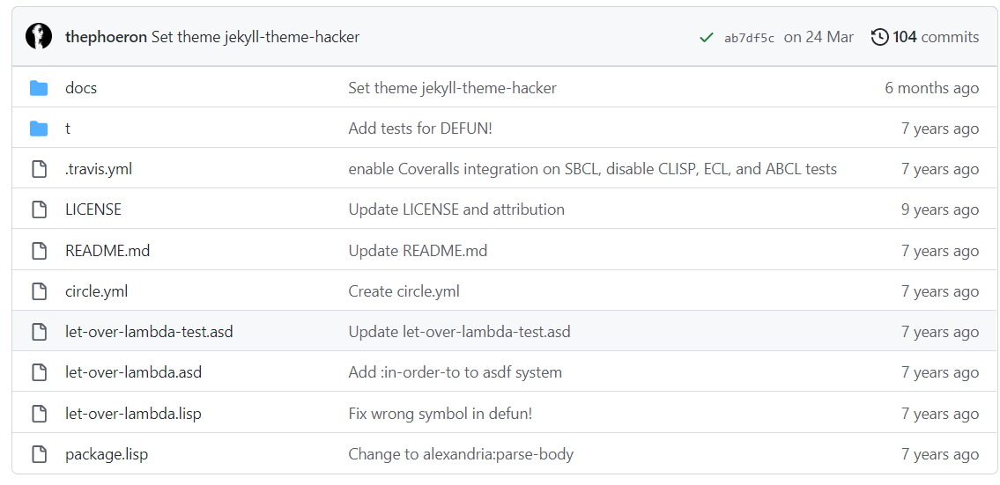
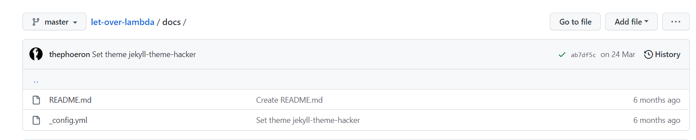
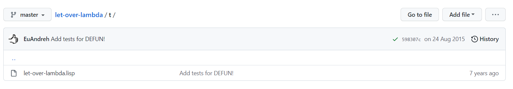

生产代码
GitHub Repo: https://github.com/thephoeron/let-over-lambda
项目目录结构
(in-package cl-user)
(defpackage let-over-lambda-test
(:use cl let-over-lambda prove)
(:import-from named-readtables
in-readtable))
(in-package let-over-lambda-test)
(in-readtable lol-syntax)
;; NOTE: To run this test file, execute `(asdf:test-system :let-over-lambda)' in your Lisp.
(plan 8)
(defun! fn! ()
`(let ((,g!test 123))
,g!test))
(defmacro fn-macro ()
(fn!))
(deftest defun!-test
(is-expand (fn-macro)
(LET (($TEST 123))
$TEST)))
(defparameter flatten-list `(D (E (F ,'(G)))))
(deftest flatten-test
(is (flatten '((A . B) (C D (E) (F (G)))))
'(A B C D E F G)
"FLATTEN function works as expected.")
(is (flatten `(A B C ,flatten-list))
'(A B C D E F G)
"FLATTEN on quasiquotes works as expected."))
(defparameter heredoc-string #>END
I can put anything here: ", , "# and ># are
no problem. The only thing that will terminate
the reading of this string is...END)
(deftest heredoc-read-macro-test
(is heredoc-string
"I can put anything here: \", , \"# and ># are
no problem. The only thing that will terminate
the reading of this string is..."
"SHARP-GREATER-THEN read macro works as expected."))
(deftest pilfered-perl-regex-syntax-test
(is-expand '#~m|\w+tp://|
'(lambda ($str) (cl-ppcre:scan-to-strings "\\w+tp://" $str))
"#~m expands correctly.")
(is-expand '#~s/abc/def/
'(lambda ($str) (cl-ppcre:regex-replace-all "abc" $str "def"))
"#~s expands correctly.")
(is-values (#~m/abc/ "123abc")
'("abc" #())
"#~m runs correctly."
:test #'equalp)
(is (#~s/abc/def/ "Testing abc testing abc")
"Testing def testing def"
"#~s runs correctly."))
(deftest read-anaphor-sharp-backquote-test
(is '#`((,a1))
'(lambda (a1) `((,a1)))
"SHARP-BACKQUOTE expands correctly."
:test #'equalp)
(is-expand #.(#3`(((,@a2)) ,a3 (,a1 ,a1))
(gensym)
'(a b c)
'hello)
(((a b c)) hello ($g $g))
"SHARP-BACKQUOTE runs correctly, respecting order, gensyms, nesting, numarg, etc."))
(deftest sharp-f-test
(is '#f
'(declare (optimize (speed 3) (safety 0)))
"Default numarg SHARP-F expands correctly.")
(is '#0f
'(declare (optimize (speed 0) (safety 3)))
"Numarg = 3 SHARP-F expands correctly.")
(is '(#1f #2f)
'((declare (optimize (speed 1) (safety 2)))
(declare (optimize (speed 2) (safety 1))))
"SHARP-F correctly expands into rarely used compiler options."))
(deftest |test-#""#-read-macro|
(is #"Contains " and \."#
"Contains \" and \\."
"SHARP-QUOTE read macro works as expected."))
(deftest if-match-test
(is (if-match (#~m_a(b)c_ "abc")
$1)
"b"
"IF-MATCH correctly returns the single capture.")
(is-error (if-match (#~m_a(b)c_ "abc")
$2)
'simple-error
"IF-MATCH throws an error when $2 is unbound.")
(is (if-match (#~m_a(b)c_ "def")
$1
:else)
:else
"When IF-MATCH test is false it goes to the else body.")
(is (if-match (#~m_a(b)c_ "abc")
(if-match (#~m_(d)(e)f_ "def")
(list $1 $2)
:no-second-match)
$1)
'("d" "e")
"IF-MATCH works with nested IF-MATCHs.")
(is (if-match (#~m_a(b)c_ "abc")
(if-match (#~m_(d)(e)f_ "d ef")
(list $1 $2)
:no-second-match)
$1)
:no-second-match
"IF-MATCH works with nested IF-MATCHs.")
(is-error (if-match (#~m_a(b)c_ "ab c")
(if-match (#~m_(d)(e)f_ "d ef")
(list $1 $2)
:no-second-match)
$1)
'simple-error
"IF-MATCH throws an error, even when nested.")
(is-error (if-match (#~m_a(b)c_ "ab c")
(if-match (#~m_(d)(e)f_ "d ef")
(list $1 $2)
:no-second-match)
$2)
'simple-error
"IF-MATCH throws an error, even when nested."))
(run-test-all)
License 说明
Antiweb (C) Doug Hoyte
This is a “production” version of LOL with bug-fixes and new features in the spirit of the book.
This is the source code for the book _Let_Over_Lambda_ by Doug Hoyte. This code is (C) 2002-2008, Doug Hoyte.
You are free to use, modify, and re-distribute this code however you want, except that any modifications must be clearly indicated before re-distribution. There is no warranty, expressed nor implied.
Attribution of this code to me, Doug Hoyte, is appreciated but not necessary. If you find the code useful, or would like documentation, please consider buying the book!
Modifications by “the Phoeron” Colin J.E. Lupton, 2012–2014 - Support for ASDF/Quicklisp - Cheap hacks to support new Backquote implementation in SBCL v1.2.2
Safety feature for SBCL>=v1.2.2
代码架构
  
t
LICENSE
package.lisp
1(defvar forth-registers
2 '(pstack rstack pc
3 dict compiling dtable))
;; This is the source code for the book ;; _Let_Over_Lambda_ by Doug Hoyte. ;; This code is (C) 2002-2008, Doug Hoyte. ;; ;; You are free to use, modify, and re-distribute ;; this code however you want, except that any ;; modifications must be clearly indicated before ;; re-distribution. There is no warranty, ;; expressed nor implied. ;; ;; Attribution of this code to me, Doug Hoyte, is ;; appreciated but not necessary. If you find the ;; code useful, or would like documentation, ;; please consider buying the book!
(defvar lol-edition “1.0”)
产品代码
t
let-over-lambda.lisp
1;;;; -*- Mode: LISP; Syntax: COMMON-LISP; Package: LET-OVER-LAMBDA; Base: 10 -*- file: let-over-lambda.lisp
2
3(in-package #:let-over-lambda)
4
5;; Antiweb (C) Doug Hoyte
6
7;; This is a "production" version of LOL with bug-fixes
8;; and new features in the spirit of the book.
9
10;; See http://letoverlambda.com
11
12;; This is the source code for the book
13;; _Let_Over_Lambda_ by Doug Hoyte.
14;; This code is (C) 2002-2008, Doug Hoyte.
15;;
16;; You are free to use, modify, and re-distribute
17;; this code however you want, except that any
18;; modifications must be clearly indicated before
19;; re-distribution. There is no warranty,
20;; expressed nor implied.
21;;
22;; Attribution of this code to me, Doug Hoyte, is
23;; appreciated but not necessary. If you find the
24;; code useful, or would like documentation,
25;; please consider buying the book!
26
27;; Modifications by "the Phoeron" Colin J.E. Lupton, 2012--2014
28;; - Support for ASDF/Quicklisp
29;; - Cheap hacks to support new Backquote implementation in SBCL v1.2.2
30
31;; Safety feature for SBCL>=v1.2.2
32#+sbcl
33(eval-when (:compile-toplevel :execute)
34(handler-case
35 (progn
36 (sb-ext:assert-version->= 1 2 2)
37 (setq *features* (remove 'old-sbcl *features*)))
38 (error ()
39 (pushnew 'old-sbcl *features*))))
group
1(defun group (source n)
2(if (zerop n) (error "zero length"))
3(labels ((rec (source acc)
4 (let ((rest (nthcdr n source)))
5 (if (consp rest)
6 (rec rest (cons
7 (subseq source 0 n)
8 acc))
9 (nreverse
10 (cons source acc))))))
11 (if source (rec source nil) nil)))
12
13(eval-when (:compile-toplevel :execute :load-toplevel)
mkstr
1(defun mkstr (&rest args)
2 (with-output-to-string (s)
3 (dolist (a args) (princ a s))))
symb
1(defun symb (&rest args)
2 (values (intern (apply #'mkstr args))))
flatten
1(defun flatten (x)
2 (labels ((rec (x acc)
3 (cond ((null x) acc)
4 #+(and sbcl (not lol::old-sbcl))
5 ((typep x 'sb-impl::comma) (rec (sb-impl::comma-expr x) acc))
6 ((atom x) (cons x acc))
7 (t (rec
8 (car x)
9 (rec (cdr x) acc))))))
10 (rec x nil)))
g!-symbol-p
1(defun g!-symbol-p (s)
2 (and (symbolp s)
3 (> (length (symbol-name s)) 2)
4 (string= (symbol-name s)
5 "G!"
6 :start1 0
7 :end1 2)))
o!-symbol-p
1(defun o!-symbol-p (s)
2 (and (symbolp s)
3 (> (length (symbol-name s)) 2)
4 (string= (symbol-name s)
5 "O!"
6 :start1 0
7 :end1 2)))
o!-symbol-to-g!-symbol
1(defun o!-symbol-to-g!-symbol (s)
2 (symb "G!"
3 (subseq (symbol-name s) 2))))
defmacro/g!
1(defmacro defmacro/g! (name args &rest body)
2(let ((syms (remove-duplicates
3 (remove-if-not #'g!-symbol-p
4 (flatten body)))))
5 (multiple-value-bind (body declarations docstring)
6 (parse-body body :documentation t)
7 `(defmacro ,name ,args
8 ,@(when docstring
9 (list docstring))
10 ,@declarations
11 (let ,(mapcar
12 (lambda (s)
13 `(,s (gensym ,(subseq
14 (symbol-name s)
15 2))))
16 syms)
17 ,@body)))))
defmacro!
1(defmacro defmacro! (name args &rest body)
2(let* ((os (remove-if-not #'o!-symbol-p (flatten args)))
3 (gs (mapcar #'o!-symbol-to-g!-symbol os)))
4 (multiple-value-bind (body declarations docstring)
5 (parse-body body :documentation t)
6 `(defmacro/g! ,name ,args
7 ,@(when docstring
8 (list docstring))
9 ,@declarations
10 `(let ,(mapcar #'list (list ,@gs) (list ,@os))
11 ,(progn ,@body))))))
defun!
1(defmacro defun! (name args &body body)
2(let ((syms (remove-duplicates
3 (remove-if-not #'g!-symbol-p
4 (flatten body)))))
5 (multiple-value-bind (body declarations docstring)
6 (parse-body body :documentation t)
7 `(defun ,name ,args
8 ,@(when docstring
9 (list docstring))
10 ,@declarations
11 (let ,(mapcar (lambda (s)
12 `(,s (gensym ,(subseq (symbol-name s)
13 2))))
14 syms)
15 ,@body)))))
16
17;; Nestable suggestion from Daniel Herring
18(eval-when (:compile-toplevel :load-toplevel :execute)
|#"-reader|
1(defun |#"-reader| (stream sub-char numarg)
2(declare (ignore sub-char numarg))
3(let (chars (state 'normal) (depth 1))
4 (loop do
5 (let ((curr (read-char stream)))
6 (cond ((eq state 'normal)
7 (cond ((char= curr #\#)
8 (push #\# chars)
9 (setq state 'read-sharp))
10 ((char= curr #\")
11 (setq state 'read-quote))
12 (t
13 (push curr chars))))
14 ((eq state 'read-sharp)
15 (cond ((char= curr #\")
16 (push #\" chars)
17 (incf depth)
18 (setq state 'normal))
19 (t
20 (push curr chars)
21 (setq state 'normal))))
22 ((eq state 'read-quote)
23 (cond ((char= curr #\#)
24 (decf depth)
25 (if (zerop depth) (return))
26 (push #\" chars)
27 (push #\# chars)
28 (setq state 'normal))
29 (t
30 (push #\" chars)
31 (if (char= curr #\")
32 (setq state 'read-quote)
33 (progn
34 (push curr chars)
35 (setq state 'normal)))))))))
36 (coerce (nreverse chars) 'string))))
37
38; (set-dispatch-macro-character #\# #\" #'|#"-reader|)
39
40; This version is from Martin Dirichs
41(eval-when (:compile-toplevel :load-toplevel :execute)
|#>-reader|
1(defun |#>-reader| (stream sub-char numarg)
2 (declare (ignore sub-char numarg))
3 (let (chars)
4 (do ((curr (read-char stream)
5 (read-char stream)))
6 ((char= #\newline curr))
7 (push curr chars))
8 (let ((pattern (nreverse chars))
9 output)
10 (labels ((match (pos chars)
11 (if (null chars)
12 pos
13 (if (char= (nth pos pattern) (car chars))
14 (match (1+ pos) (cdr chars))
15 (match 0 (cdr (append (subseq pattern 0 pos) chars)))))))
16 (do (curr
17 (pos 0))
18 ((= pos (length pattern)))
19 (setf curr (read-char stream)
20 pos (match pos (list curr)))
21 (push curr output))
22 (coerce
23 (nreverse
24 (nthcdr (length pattern) output))
25 'string))))))
26
27; (set-dispatch-macro-character #\# #\> #'|#>-reader|)
segment-reader
1(defun segment-reader (stream ch n)
2(if (> n 0)
3 (let ((chars))
4 (do ((curr (read-char stream)
5 (read-char stream)))
6 ((char= ch curr))
7 (push curr chars))
8 (cons (coerce (nreverse chars) 'string)
9 (segment-reader stream ch (- n 1))))))
match-mode-ppcre-lambda-form
1#+cl-ppcre
2(defmacro! match-mode-ppcre-lambda-form (o!args o!mods)
3``(lambda (,',g!str)
4 (ppcre:scan-to-strings
5 ,(if (zerop (length ,g!mods))
6 (car ,g!args)
7 (format nil "(?~a)~a" ,g!mods (car ,g!args)))
8 ,',g!str)))
9
10#+cl-ppcre
11(defmacro! subst-mode-ppcre-lambda-form (o!args)
12``(lambda (,',g!str)
13 (cl-ppcre:regex-replace-all
14 ,(car ,g!args)
15 ,',g!str
16 ,(cadr ,g!args))))
|#~-reader|
1#+cl-ppcre
2(eval-when (:compile-toplevel :load-toplevel :execute)
3(defun |#~-reader| (stream sub-char numarg)
4 (declare (ignore sub-char numarg))
5 (let ((mode-char (read-char stream)))
6 (cond
7 ((char= mode-char #\m)
8 (match-mode-ppcre-lambda-form
9 (segment-reader stream
10 (read-char stream)
11 1)
12 (coerce (loop for c = (read-char stream)
13 while (alpha-char-p c)
14 collect c
15 finally (unread-char c stream))
16 'string)))
17 ((char= mode-char #\s)
18 (subst-mode-ppcre-lambda-form
19 (segment-reader stream
20 (read-char stream)
21 2)))
22 (t (error "Unknown #~~ mode character"))))))
23
24; #+cl-ppcre (set-dispatch-macro-character #\# #\~ #'|#~-reader|)
dlambda
1(defmacro! dlambda (&rest ds)
2`(lambda (&rest ,g!args)
3 (case (car ,g!args)
4 ,@(mapcar
5 (lambda (d)
6 `(,(if (eq t (car d))
7 t
8 (list (car d)))
9 (apply (lambda ,@(cdr d))
10 ,(if (eq t (car d))
11 g!args
12 `(cdr ,g!args)))))
13 ds))))
alambda
1;; Graham's alambda
2(defmacro alambda (parms &body body)
3`(labels ((self ,parms ,@body))
4 #'self))
aif
1;; Graham's aif
2(defmacro aif (test then &optional else)
3`(let ((it ,test))
4 (if it ,then ,else)))
|#`-reader|
1(eval-when (:compile-toplevel :execute :load-toplevel)
2(defun |#`-reader| (stream sub-char numarg)
3 (declare (ignore sub-char))
4 (unless numarg (setq numarg 1))
5 `(lambda ,(loop for i from 1 to numarg
6 collect (symb 'a i))
7 ,(funcall
8 (get-macro-character #\`) stream nil)))
|#f-reader|
1(defun |#f-reader| (stream sub-char numarg)
2 (declare (ignore stream sub-char))
3 (setq numarg (or numarg 3))
4 (unless (<= numarg 3)
5 (error "Bad value for #f: ~a" numarg))
6 `(declare (optimize (speed ,numarg)
7 (safety ,(- 3 numarg)))))
lol-syntax
1(defreadtable lol-syntax
2 (:merge :standard)
3 (:dispatch-macro-char #\# #\" #'|#"-reader|)
4 (:dispatch-macro-char #\# #\> #'|#>-reader|)
5 #+cl-ppcre
6 (:dispatch-macro-char #\# #\~ #'|#~-reader|)
7 (:dispatch-macro-char #\# #\` #'|#`-reader|)
8 (:dispatch-macro-char #\# #\f #'|#f-reader|)))
nlet-tail
1(in-readtable lol-syntax)
2
3(defmacro! nlet-tail (n letargs &body body)
4(let ((gs (loop for i in letargs
5 collect (gensym))))
6 `(macrolet
7 ((,n ,gs
8 `(progn
9 (psetq
10 ,@(apply #'nconc
11 (mapcar
12 #'list
13 ',(mapcar #'car letargs)
14 (list ,@gs))))
15 (go ,',g!n))))
16 (block ,g!b
17 (let ,letargs
18 (tagbody
19 ,g!n (return-from
20 ,g!b (progn ,@body))))))))
alet%
1(defmacro alet% (letargs &rest body)
2`(let ((this) ,@letargs)
3 (setq this ,@(last body))
4 ,@(butlast body)
5 this))
alet
1(defmacro alet (letargs &rest body)
2`(let ((this) ,@letargs)
3 (setq this ,@(last body))
4 ,@(butlast body)
5 (lambda (&rest params)
6 (apply this params))))
let-binding-transform
1(defun let-binding-transform (bs)
2(if bs
3 (cons
4 (cond ((symbolp (car bs))
5 (list (car bs)))
6 ((consp (car bs))
7 (car bs))
8 (t
9 (error "Bad let bindings")))
10 (let-binding-transform (cdr bs)))))
pandoriclet
1(defmacro pandoriclet (letargs &rest body)
2(let ((letargs (cons
3 '(this)
4 (let-binding-transform
5 letargs))))
6 `(let (,@letargs)
7 (setq this ,@(last body))
8 ,@(butlast body)
9 (dlambda
10 (:pandoric-get (sym)
11 ,(pandoriclet-get letargs))
12 (:pandoric-set (sym val)
13 ,(pandoriclet-set letargs))
14 (t (&rest args)
15 (apply this args))))))
pandoriclet-get
1(defun pandoriclet-get (letargs)
2`(case sym
3 ,@(mapcar #`((,(car a1)) ,(car a1))
4 letargs)
5 (t (error
6 "Unknown pandoric get: ~a"
7 sym))))
pandoriclet-set
1(defun pandoriclet-set (letargs)
2`(case sym
3 ,@(mapcar #`((,(car a1))
4 (setq ,(car a1) val))
5 letargs)
6 (t (error
7 "Unknown pandoric set: ~a"
8 sym))))
get-pandoric
1(declaim (inline get-pandoric))
2
3(defun get-pandoric (box sym)
4(funcall box :pandoric-get sym))
get-pandoric
1(defsetf get-pandoric (box sym) (val)
2`(progn
3 (funcall ,box :pandoric-set ,sym ,val)
4 ,val))
with-pandoric
1(defmacro with-pandoric (syms box &rest body)
2(let ((g!box (gensym "box")))
3 `(let ((,g!box ,box))
4 (declare (ignorable ,g!box))
5 (symbol-macrolet
6 (,@(mapcar #`(,a1 (get-pandoric ,g!box ',a1))
7 syms))
8 ,@body))))
pandoric-hotpatch
1(defun pandoric-hotpatch (box new)
2(with-pandoric (this) box
3 (setq this new)))
pandoric-recode
1(defmacro pandoric-recode (vars box new)
2`(with-pandoric (this ,@vars) ,box
3 (setq this ,new)))
plambda
1(defmacro plambda (largs pargs &rest body)
2(let ((pargs (mapcar #'list pargs)))
3 `(let (this self)
4 (setq
5 this (lambda ,largs ,@body)
6 self (dlambda
7 (:pandoric-get (sym)
8 ,(pandoriclet-get pargs))
9 (:pandoric-set (sym val)
10 ,(pandoriclet-set pargs))
11 (t (&rest args)
12 (apply this args)))))))
pandoric-eval-tunnel
1(defvar pandoric-eval-tunnel)
pandoric-eval
1(defmacro pandoric-eval (vars expr)
2`(let ((pandoric-eval-tunnel
3 (plambda () ,vars t)))
4 (eval `(with-pandoric
5 ,',vars pandoric-eval-tunnel
6 ,,expr))))
1;; Chapter 7
fast-progn
1(defmacro fast-progn (&rest body)
2`(locally #f ,@body))
safe-progn
1(defmacro safe-progn (&rest body)
2`(locally #0f ,@body))
fformat
1(defun fformat (&rest all)
2(apply #'format all))
fformat
1(define-compiler-macro fformat
2 (&whole form
3 stream fmt &rest args)
4(if (constantp fmt)
5 (if stream
6 `(funcall (formatter ,fmt)
7 ,stream ,@args)
8 (let ((g!stream (gensym "stream")))
9 `(with-output-to-string (,g!stream)
10 (funcall (formatter ,fmt)
11 ,g!stream ,@args))))
12 form))
inline make-tlist tlist-left tlist-right tlist-empty-p
1(declaim (inline make-tlist tlist-left
2 tlist-right tlist-empty-p))
make-tlist
1(defun make-tlist () (cons nil nil))
tlist-left
1(defun tlist-left (tl) (caar tl))
tlist-right
1(defun tlist-right (tl) (cadr tl))
tlist-empty-p
1(defun tlist-empty-p (tl) (null (car tl)))
inline tlist-add-left tlist-add-right
1(declaim (inline tlist-add-left
2 tlist-add-right))
tlist-add-left
1(defun tlist-add-left (tl it)
2(let ((x (cons it (car tl))))
3 (if (tlist-empty-p tl)
4 (setf (cdr tl) x))
5 (setf (car tl) x)))
tlist-add-right
1(defun tlist-add-right (tl it)
2(let ((x (cons it nil)))
3 (if (tlist-empty-p tl)
4 (setf (car tl) x)
5 (setf (cddr tl) x))
6 (setf (cdr tl) x)))
tlist-rem-left
1(declaim (inline tlist-rem-left))
2(defun tlist-rem-left (tl)
3(if (tlist-empty-p tl)
4 (error "Remove from empty tlist")
5 (let ((x (car tl)))
6 (setf (car tl) (cdar tl))
7 (if (tlist-empty-p tl)
8 (setf (cdr tl) nil)) ;; For gc
9 (car x))))
tlist-update
1(declaim (inline tlist-update))
2
3(defun tlist-update (tl)
4(setf (cdr tl) (last (car tl))))
build-batcher-sn
1(defun build-batcher-sn (n)
2(let* (network
3 (tee (ceiling (log n 2)))
4 (p (ash 1 (- tee 1))))
5 (loop while (> p 0) do
6 (let ((q (ash 1 (- tee 1)))
7 (r 0)
8 (d p))
9 (loop while (> d 0) do
10 (loop for i from 0 to (- n d 1) do
11 (if (= (logand i p) r)
12 (push (list i (+ i d))
13 network)))
14 (setf d (- q p)
15 q (ash q -1)
16 r p)))
17 (setf p (ash p -1)))
18 (nreverse network)))
sortf
1(defmacro! sortf (comparator &rest places)
2(if places
3 `(tagbody
4 ,@(mapcar
5 #`(let ((,g!a #1=,(nth (car a1) places))
6 (,g!b #2=,(nth (cadr a1) places)))
7 (if (,comparator ,g!b ,g!a)
8 (setf #1# ,g!b
9 #2# ,g!a)))
10 (build-batcher-sn (length places))))))
dollar-symbol-p
1;;;;;; NEW CODE FOR ANTIWEB
2#+cl-ppcre
3(defun dollar-symbol-p (s)
4(and (symbolp s)
5 (> (length (symbol-name s)) 1)
6 (string= (symbol-name s)
7 "$"
8 :start1 0
9 :end1 1)
10 (ignore-errors (parse-integer (subseq (symbol-name s) 1)))))
if-match
1(defmacro! if-match ((match-regex str) then &optional else)
2(let* ((dollars (remove-duplicates
3 (remove-if-not #'dollar-symbol-p
4 (flatten then))))
5 (top (or (car (sort (mapcar #'dollar-symbol-p dollars) #'>))
6 0)))
7 `(multiple-value-bind (,g!matches ,g!captures) (,match-regex ,str)
8 (declare (ignorable ,g!matches ,g!captures))
9 (let ((,g!captures-len (length ,g!captures)))
10 (declare (ignorable ,g!captures-len))
11 (symbol-macrolet ,(mapcar #`(,(symb "$" a1)
12 (if (< ,g!captures-len ,a1)
13 (error "Too few matchs: ~a unbound." ,(mkstr "$" a1))
14 (aref ,g!captures ,(1- a1))))
15 (loop for i from 1 to top collect i))
16 (if ,g!matches
17 ,then
18 ,else))))))
when-match
1(defmacro when-match ((match-regex str) &body forms)
2`(if-match (,match-regex ,str)
3 (progn ,@forms)))
4
5;; EOF
.travis.yml
1language: common-lisp
2
3sudo: required
4
5env:
6matrix:
7 - LISP=sbcl COVERALLS=true
8 - LISP=ccl
9 # - LISP=clisp
10 # - LISP=ecl
11 # - LISP=abcl
12
13install:
14- if [ -x ./install.sh ] && head -2 ./install.sh | grep '^# cl-travis' > /dev/null;
15 then
16 ./install.sh;
17 else
18 curl https://raw.githubusercontent.com/luismbo/cl-travis/master/install.sh | sh;
19 fi
20# Coveralls support
21- git clone https://github.com/fukamachi/cl-coveralls ~/lisp/cl-coveralls
22
23script:
24- cl -l prove -l cl-coveralls
25 -e '(in-package :cl-user)'
26 -e '(ql:quickload :let-over-lambda)'
27 -e '(setf prove:*debug-on-error* t)'
28 -e '(setf *debugger-hook*
29 (lambda (c h)
30 (declare (ignore c h))
31 (uiop:quit -1)))'
32 -e '(coveralls:with-coveralls (:exclude (list "t"))
33 (or (prove:run :let-over-lambda-test)
34 (uiop:quit -1)))'
35
36notifications:
37webhooks:
38 urls:
39 - https://webhooks.gitter.im/e/fba7308ceb6194ceb9ff
40 on_success: change # options: [always|never|change] default: always
41 on_failure: always # options: [always|never|change] default: always
42 on_start: false # default: false
circle.yml
1machine:
2environment:
3 PATH: ~/.roswell/bin:$PATH
4
5dependencies:
6pre:
7 - curl -L https://raw.githubusercontent.com/snmsts/roswell/release/scripts/install-for-ci.sh | sh
8 - case $CIRCLE_NODE_INDEX in
9 0) ros config set default.lisp sbcl-bin ;;
10 1) ros install ccl-bin;
11 ros config set default.lisp ccl-bin ;;
12 esac
13 - ros run -- --version
14override:
15 - git clone https://github.com/fukamachi/cl-coveralls ~/lisp/cl-coveralls
16 - git clone https://github.com/fukamachi/prove ~/lisp/prove
17 - ros -l ~/lisp/prove/prove.asd install prove
18
19test:
20override:
21 - if [ "$CIRCLE_NODE_INDEX" = 0 ]; then COVERALLS=true run-prove let-over-lambda-test.asd; else run-prove let-over-lambda-test.asd; fi: {parallel: true}
let-over-lambda.asd
1;;;; -*- Mode: LISP; Syntax: COMMON-LISP; Package: LET-OVER-LAMBDA; Base: 10 -*- file: let-over-lambda.asd
2
3(in-package :cl-user)
4
5(defpackage let-over-lambda-asd
6(:use :cl :asdf)
7(:export #:*lol-version*))
8
9(in-package :let-over-lambda-asd)
10
11(defparameter *lol-version* "1.0.1"
12"A string denoting the current version of LET-OVER-LAMBDA. Used for diagnostic output.")
13
14(defsystem #:let-over-lambda
15:serial t
16:description "The Production version code from letoverlambda.com, conveniently wrapped in an ASDF System for Quicklisp."
17:version #.*lol-version*
18:author "Doug Hoyte <doug@hoytech.com>"
19:maintainer "\"the Phoeron\" Colin J.E. Lupton <sysop@thephoeron.com>"
20:license "BSD Simplified"
21:depends-on (#:alexandria
22 #:cl-ppcre
23 #:named-readtables)
24:components ((:file "package")
25 (:file "let-over-lambda"))
26:in-order-to ((test-op (test-op let-over-lambda-test))))
27
28;; EOF
let-over-lambda.lisp(whole)
1;;;; -*- Mode: LISP; Syntax: COMMON-LISP; Package: LET-OVER-LAMBDA; Base: 10 -*- file: let-over-lambda.lisp
2
3(in-package #:let-over-lambda)
4
5;; Antiweb (C) Doug Hoyte
6
7;; This is a "production" version of LOL with bug-fixes
8;; and new features in the spirit of the book.
9
10;; See http://letoverlambda.com
11
12;; This is the source code for the book
13;; _Let_Over_Lambda_ by Doug Hoyte.
14;; This code is (C) 2002-2008, Doug Hoyte.
15;;
16;; You are free to use, modify, and re-distribute
17;; this code however you want, except that any
18;; modifications must be clearly indicated before
19;; re-distribution. There is no warranty,
20;; expressed nor implied.
21;;
22;; Attribution of this code to me, Doug Hoyte, is
23;; appreciated but not necessary. If you find the
24;; code useful, or would like documentation,
25;; please consider buying the book!
26
27;; Modifications by "the Phoeron" Colin J.E. Lupton, 2012--2014
28;; - Support for ASDF/Quicklisp
29;; - Cheap hacks to support new Backquote implementation in SBCL v1.2.2
30
31;; Safety feature for SBCL>=v1.2.2
32#+sbcl
33(eval-when (:compile-toplevel :execute)
34(handler-case
35 (progn
36 (sb-ext:assert-version->= 1 2 2)
37 (setq *features* (remove 'old-sbcl *features*)))
38 (error ()
39 (pushnew 'old-sbcl *features*))))
40
41(defun group (source n)
42(if (zerop n) (error "zero length"))
43(labels ((rec (source acc)
44 (let ((rest (nthcdr n source)))
45 (if (consp rest)
46 (rec rest (cons
47 (subseq source 0 n)
48 acc))
49 (nreverse
50 (cons source acc))))))
51 (if source (rec source nil) nil)))
52
53(eval-when (:compile-toplevel :execute :load-toplevel)
54(defun mkstr (&rest args)
55 (with-output-to-string (s)
56 (dolist (a args) (princ a s))))
57
58(defun symb (&rest args)
59 (values (intern (apply #'mkstr args))))
60
61(defun flatten (x)
62 (labels ((rec (x acc)
63 (cond ((null x) acc)
64 #+(and sbcl (not lol::old-sbcl))
65 ((typep x 'sb-impl::comma) (rec (sb-impl::comma-expr x) acc))
66 ((atom x) (cons x acc))
67 (t (rec
68 (car x)
69 (rec (cdr x) acc))))))
70 (rec x nil)))
71
72(defun g!-symbol-p (s)
73 (and (symbolp s)
74 (> (length (symbol-name s)) 2)
75 (string= (symbol-name s)
76 "G!"
77 :start1 0
78 :end1 2)))
79
80(defun o!-symbol-p (s)
81 (and (symbolp s)
82 (> (length (symbol-name s)) 2)
83 (string= (symbol-name s)
84 "O!"
85 :start1 0
86 :end1 2)))
87
88(defun o!-symbol-to-g!-symbol (s)
89 (symb "G!"
90 (subseq (symbol-name s) 2))))
91
92(defmacro defmacro/g! (name args &rest body)
93(let ((syms (remove-duplicates
94 (remove-if-not #'g!-symbol-p
95 (flatten body)))))
96 (multiple-value-bind (body declarations docstring)
97 (parse-body body :documentation t)
98 `(defmacro ,name ,args
99 ,@(when docstring
100 (list docstring))
101 ,@declarations
102 (let ,(mapcar
103 (lambda (s)
104 `(,s (gensym ,(subseq
105 (symbol-name s)
106 2))))
107 syms)
108 ,@body)))))
109
110(defmacro defmacro! (name args &rest body)
111(let* ((os (remove-if-not #'o!-symbol-p (flatten args)))
112 (gs (mapcar #'o!-symbol-to-g!-symbol os)))
113 (multiple-value-bind (body declarations docstring)
114 (parse-body body :documentation t)
115 `(defmacro/g! ,name ,args
116 ,@(when docstring
117 (list docstring))
118 ,@declarations
119 `(let ,(mapcar #'list (list ,@gs) (list ,@os))
120 ,(progn ,@body))))))
121
122(defmacro defun! (name args &body body)
123(let ((syms (remove-duplicates
124 (remove-if-not #'g!-symbol-p
125 (flatten body)))))
126 (multiple-value-bind (body declarations docstring)
127 (parse-body body :documentation t)
128 `(defun ,name ,args
129 ,@(when docstring
130 (list docstring))
131 ,@declarations
132 (let ,(mapcar (lambda (s)
133 `(,s (gensym ,(subseq (symbol-name s)
134 2))))
135 syms)
136 ,@body)))))
137
138;; Nestable suggestion from Daniel Herring
139(eval-when (:compile-toplevel :load-toplevel :execute)
140(defun |#"-reader| (stream sub-char numarg)
141(declare (ignore sub-char numarg))
142(let (chars (state 'normal) (depth 1))
143 (loop do
144 (let ((curr (read-char stream)))
145 (cond ((eq state 'normal)
146 (cond ((char= curr #\#)
147 (push #\# chars)
148 (setq state 'read-sharp))
149 ((char= curr #\")
150 (setq state 'read-quote))
151 (t
152 (push curr chars))))
153 ((eq state 'read-sharp)
154 (cond ((char= curr #\")
155 (push #\" chars)
156 (incf depth)
157 (setq state 'normal))
158 (t
159 (push curr chars)
160 (setq state 'normal))))
161 ((eq state 'read-quote)
162 (cond ((char= curr #\#)
163 (decf depth)
164 (if (zerop depth) (return))
165 (push #\" chars)
166 (push #\# chars)
167 (setq state 'normal))
168 (t
169 (push #\" chars)
170 (if (char= curr #\")
171 (setq state 'read-quote)
172 (progn
173 (push curr chars)
174 (setq state 'normal)))))))))
175 (coerce (nreverse chars) 'string))))
176
177; (set-dispatch-macro-character #\# #\" #'|#"-reader|)
178
179; This version is from Martin Dirichs
180(eval-when (:compile-toplevel :load-toplevel :execute)
181(defun |#>-reader| (stream sub-char numarg)
182 (declare (ignore sub-char numarg))
183 (let (chars)
184 (do ((curr (read-char stream)
185 (read-char stream)))
186 ((char= #\newline curr))
187 (push curr chars))
188 (let ((pattern (nreverse chars))
189 output)
190 (labels ((match (pos chars)
191 (if (null chars)
192 pos
193 (if (char= (nth pos pattern) (car chars))
194 (match (1+ pos) (cdr chars))
195 (match 0 (cdr (append (subseq pattern 0 pos) chars)))))))
196 (do (curr
197 (pos 0))
198 ((= pos (length pattern)))
199 (setf curr (read-char stream)
200 pos (match pos (list curr)))
201 (push curr output))
202 (coerce
203 (nreverse
204 (nthcdr (length pattern) output))
205 'string))))))
206
207; (set-dispatch-macro-character #\# #\> #'|#>-reader|)
208
209(defun segment-reader (stream ch n)
210(if (> n 0)
211 (let ((chars))
212 (do ((curr (read-char stream)
213 (read-char stream)))
214 ((char= ch curr))
215 (push curr chars))
216 (cons (coerce (nreverse chars) 'string)
217 (segment-reader stream ch (- n 1))))))
218
219#+cl-ppcre
220(defmacro! match-mode-ppcre-lambda-form (o!args o!mods)
221``(lambda (,',g!str)
222 (ppcre:scan-to-strings
223 ,(if (zerop (length ,g!mods))
224 (car ,g!args)
225 (format nil "(?~a)~a" ,g!mods (car ,g!args)))
226 ,',g!str)))
227
228#+cl-ppcre
229(defmacro! subst-mode-ppcre-lambda-form (o!args)
230``(lambda (,',g!str)
231 (cl-ppcre:regex-replace-all
232 ,(car ,g!args)
233 ,',g!str
234 ,(cadr ,g!args))))
235
236#+cl-ppcre
237(eval-when (:compile-toplevel :load-toplevel :execute)
238(defun |#~-reader| (stream sub-char numarg)
239 (declare (ignore sub-char numarg))
240 (let ((mode-char (read-char stream)))
241 (cond
242 ((char= mode-char #\m)
243 (match-mode-ppcre-lambda-form
244 (segment-reader stream
245 (read-char stream)
246 1)
247 (coerce (loop for c = (read-char stream)
248 while (alpha-char-p c)
249 collect c
250 finally (unread-char c stream))
251 'string)))
252 ((char= mode-char #\s)
253 (subst-mode-ppcre-lambda-form
254 (segment-reader stream
255 (read-char stream)
256 2)))
257 (t (error "Unknown #~~ mode character"))))))
258
259; #+cl-ppcre (set-dispatch-macro-character #\# #\~ #'|#~-reader|)
260
261(defmacro! dlambda (&rest ds)
262`(lambda (&rest ,g!args)
263 (case (car ,g!args)
264 ,@(mapcar
265 (lambda (d)
266 `(,(if (eq t (car d))
267 t
268 (list (car d)))
269 (apply (lambda ,@(cdr d))
270 ,(if (eq t (car d))
271 g!args
272 `(cdr ,g!args)))))
273 ds))))
274
275;; Graham's alambda
276(defmacro alambda (parms &body body)
277`(labels ((self ,parms ,@body))
278 #'self))
279
280;; Graham's aif
281(defmacro aif (test then &optional else)
282`(let ((it ,test))
283 (if it ,then ,else)))
284
285(eval-when (:compile-toplevel :execute :load-toplevel)
286(defun |#`-reader| (stream sub-char numarg)
287 (declare (ignore sub-char))
288 (unless numarg (setq numarg 1))
289 `(lambda ,(loop for i from 1 to numarg
290 collect (symb 'a i))
291 ,(funcall
292 (get-macro-character #\`) stream nil)))
293
294(defun |#f-reader| (stream sub-char numarg)
295 (declare (ignore stream sub-char))
296 (setq numarg (or numarg 3))
297 (unless (<= numarg 3)
298 (error "Bad value for #f: ~a" numarg))
299 `(declare (optimize (speed ,numarg)
300 (safety ,(- 3 numarg)))))
301
302(defreadtable lol-syntax
303 (:merge :standard)
304 (:dispatch-macro-char #\# #\" #'|#"-reader|)
305 (:dispatch-macro-char #\# #\> #'|#>-reader|)
306 #+cl-ppcre
307 (:dispatch-macro-char #\# #\~ #'|#~-reader|)
308 (:dispatch-macro-char #\# #\` #'|#`-reader|)
309 (:dispatch-macro-char #\# #\f #'|#f-reader|)))
310
311(in-readtable lol-syntax)
312
313(defmacro! nlet-tail (n letargs &body body)
314(let ((gs (loop for i in letargs
315 collect (gensym))))
316 `(macrolet
317 ((,n ,gs
318 `(progn
319 (psetq
320 ,@(apply #'nconc
321 (mapcar
322 #'list
323 ',(mapcar #'car letargs)
324 (list ,@gs))))
325 (go ,',g!n))))
326 (block ,g!b
327 (let ,letargs
328 (tagbody
329 ,g!n (return-from
330 ,g!b (progn ,@body))))))))
331
332(defmacro alet% (letargs &rest body)
333`(let ((this) ,@letargs)
334 (setq this ,@(last body))
335 ,@(butlast body)
336 this))
337
338(defmacro alet (letargs &rest body)
339`(let ((this) ,@letargs)
340 (setq this ,@(last body))
341 ,@(butlast body)
342 (lambda (&rest params)
343 (apply this params))))
344
345(defun let-binding-transform (bs)
346(if bs
347 (cons
348 (cond ((symbolp (car bs))
349 (list (car bs)))
350 ((consp (car bs))
351 (car bs))
352 (t
353 (error "Bad let bindings")))
354 (let-binding-transform (cdr bs)))))
355
356(defmacro pandoriclet (letargs &rest body)
357(let ((letargs (cons
358 '(this)
359 (let-binding-transform
360 letargs))))
361 `(let (,@letargs)
362 (setq this ,@(last body))
363 ,@(butlast body)
364 (dlambda
365 (:pandoric-get (sym)
366 ,(pandoriclet-get letargs))
367 (:pandoric-set (sym val)
368 ,(pandoriclet-set letargs))
369 (t (&rest args)
370 (apply this args))))))
371
372(defun pandoriclet-get (letargs)
373`(case sym
374 ,@(mapcar #`((,(car a1)) ,(car a1))
375 letargs)
376 (t (error
377 "Unknown pandoric get: ~a"
378 sym))))
379
380(defun pandoriclet-set (letargs)
381`(case sym
382 ,@(mapcar #`((,(car a1))
383 (setq ,(car a1) val))
384 letargs)
385 (t (error
386 "Unknown pandoric set: ~a"
387 sym))))
388
389(declaim (inline get-pandoric))
390
391(defun get-pandoric (box sym)
392(funcall box :pandoric-get sym))
393
394(defsetf get-pandoric (box sym) (val)
395`(progn
396 (funcall ,box :pandoric-set ,sym ,val)
397 ,val))
398
399(defmacro with-pandoric (syms box &rest body)
400(let ((g!box (gensym "box")))
401 `(let ((,g!box ,box))
402 (declare (ignorable ,g!box))
403 (symbol-macrolet
404 (,@(mapcar #`(,a1 (get-pandoric ,g!box ',a1))
405 syms))
406 ,@body))))
407
408(defun pandoric-hotpatch (box new)
409(with-pandoric (this) box
410 (setq this new)))
411
412(defmacro pandoric-recode (vars box new)
413`(with-pandoric (this ,@vars) ,box
414 (setq this ,new)))
415
416(defmacro plambda (largs pargs &rest body)
417(let ((pargs (mapcar #'list pargs)))
418 `(let (this self)
419 (setq
420 this (lambda ,largs ,@body)
421 self (dlambda
422 (:pandoric-get (sym)
423 ,(pandoriclet-get pargs))
424 (:pandoric-set (sym val)
425 ,(pandoriclet-set pargs))
426 (t (&rest args)
427 (apply this args)))))))
428
429(defvar pandoric-eval-tunnel)
430
431(defmacro pandoric-eval (vars expr)
432`(let ((pandoric-eval-tunnel
433 (plambda () ,vars t)))
434 (eval `(with-pandoric
435 ,',vars pandoric-eval-tunnel
436 ,,expr))))
437
438;; Chapter 7
439
440
441(defmacro fast-progn (&rest body)
442`(locally #f ,@body))
443
444(defmacro safe-progn (&rest body)
445`(locally #0f ,@body))
446
447(defun fformat (&rest all)
448(apply #'format all))
449
450(define-compiler-macro fformat
451 (&whole form
452 stream fmt &rest args)
453(if (constantp fmt)
454 (if stream
455 `(funcall (formatter ,fmt)
456 ,stream ,@args)
457 (let ((g!stream (gensym "stream")))
458 `(with-output-to-string (,g!stream)
459 (funcall (formatter ,fmt)
460 ,g!stream ,@args))))
461 form))
462
463(declaim (inline make-tlist tlist-left
464 tlist-right tlist-empty-p))
465
466(defun make-tlist () (cons nil nil))
467(defun tlist-left (tl) (caar tl))
468(defun tlist-right (tl) (cadr tl))
469(defun tlist-empty-p (tl) (null (car tl)))
470
471(declaim (inline tlist-add-left
472 tlist-add-right))
473
474(defun tlist-add-left (tl it)
475(let ((x (cons it (car tl))))
476 (if (tlist-empty-p tl)
477 (setf (cdr tl) x))
478 (setf (car tl) x)))
479
480(defun tlist-add-right (tl it)
481(let ((x (cons it nil)))
482 (if (tlist-empty-p tl)
483 (setf (car tl) x)
484 (setf (cddr tl) x))
485 (setf (cdr tl) x)))
486
487(declaim (inline tlist-rem-left))
488
489(defun tlist-rem-left (tl)
490(if (tlist-empty-p tl)
491 (error "Remove from empty tlist")
492 (let ((x (car tl)))
493 (setf (car tl) (cdar tl))
494 (if (tlist-empty-p tl)
495 (setf (cdr tl) nil)) ;; For gc
496 (car x))))
497
498(declaim (inline tlist-update))
499
500(defun tlist-update (tl)
501(setf (cdr tl) (last (car tl))))
502
503(defun build-batcher-sn (n)
504(let* (network
505 (tee (ceiling (log n 2)))
506 (p (ash 1 (- tee 1))))
507 (loop while (> p 0) do
508 (let ((q (ash 1 (- tee 1)))
509 (r 0)
510 (d p))
511 (loop while (> d 0) do
512 (loop for i from 0 to (- n d 1) do
513 (if (= (logand i p) r)
514 (push (list i (+ i d))
515 network)))
516 (setf d (- q p)
517 q (ash q -1)
518 r p)))
519 (setf p (ash p -1)))
520 (nreverse network)))
521
522(defmacro! sortf (comparator &rest places)
523(if places
524 `(tagbody
525 ,@(mapcar
526 #`(let ((,g!a #1=,(nth (car a1) places))
527 (,g!b #2=,(nth (cadr a1) places)))
528 (if (,comparator ,g!b ,g!a)
529 (setf #1# ,g!b
530 #2# ,g!a)))
531 (build-batcher-sn (length places))))))
532
533;;;;;; NEW CODE FOR ANTIWEB
534#+cl-ppcre
535(defun dollar-symbol-p (s)
536(and (symbolp s)
537 (> (length (symbol-name s)) 1)
538 (string= (symbol-name s)
539 "$"
540 :start1 0
541 :end1 1)
542 (ignore-errors (parse-integer (subseq (symbol-name s) 1)))))
543
544(defmacro! if-match ((match-regex str) then &optional else)
545(let* ((dollars (remove-duplicates
546 (remove-if-not #'dollar-symbol-p
547 (flatten then))))
548 (top (or (car (sort (mapcar #'dollar-symbol-p dollars) #'>))
549 0)))
550 `(multiple-value-bind (,g!matches ,g!captures) (,match-regex ,str)
551 (declare (ignorable ,g!matches ,g!captures))
552 (let ((,g!captures-len (length ,g!captures)))
553 (declare (ignorable ,g!captures-len))
554 (symbol-macrolet ,(mapcar #`(,(symb "$" a1)
555 (if (< ,g!captures-len ,a1)
556 (error "Too few matchs: ~a unbound." ,(mkstr "$" a1))
557 (aref ,g!captures ,(1- a1))))
558 (loop for i from 1 to top collect i))
559 (if ,g!matches
560 ,then
561 ,else))))))
562
563
564(defmacro when-match ((match-regex str) &body forms)
565`(if-match (,match-regex ,str)
566 (progn ,@forms)))
567
568;; EOF
let-over-lambda-test.asd
LICENSE
package.lisp
1;;;; -*- Mode: LISP; Syntax: COMMON-LISP; Package: LET-OVER-LAMBDA; Base: 10 -*- file: package.lisp
2
3(defpackage #:let-over-lambda
4(:nicknames #:lol)
5(:use #:cl #:cl-user #:cl-ppcre)
6(:import-from #:alexandria
7 #:parse-body)
8(:import-from #:named-readtables
9 #:defreadtable
10 #:in-readtable)
11(:export #:lol-syntax
12 #:mkstr
13 #:symb
14 #:group
15 #:flatten
16 #:fact
17 #:choose
18 #:g!-symbol-p
19 #:defmacro/g!
20 #:o!-symbol-p
21 #:o!-symbol-to-g!-symbol
22 #:defmacro!
23 #:defun!
24 #:|#"-reader|
25 #:segment-reader
26 #:match-mode-ppcre-lambda-form
27 #:subst-mode-ppcre-lambda-form
28 #:|#~-reader|
29 #:dlambda
30 #:alambda
31 #:aif
32 #:|#`-reader|
33 #:|#f-reader|
34 #:nlet-tail
35 #:alet%
36 #:alet
37 #:it
38 #:this
39 #:self
40 #:let-binding-transform
41 #:pandoriclet
42 #:pandoriclet-get
43 #:pandoriclet-set
44 #:get-pandoric
45 #:with-pandoric
46 #:pandoric-hotpatch
47 #:pandoric-recode
48 #:plambda
49 #:pandoric-eval
50 #:fast-progn
51 #:safe-progn
52 #:fformat
53 #:make-tlist
54 #:tlist-left
55 #:tlist-right
56 #:tlist-empty-p
57 #:tlist-add-left
58 #:tlist-add-right
59 #:tlist-rem-left
60 #:tlist-update
61 #:build-batcher-sn
62 #:sortf
63 #:dollar-symbol-p
64 #:prune-if-match-bodies-from-sub-lexical-scope
65 #:if-match
66 #:when-match))
67
68;; EOF
README.md
1# LET-OVER-LAMBDA
2
3[](https://circleci.com/gh/thephoeron/let-over-lambda)
4[](https://travis-ci.org/thephoeron/let-over-lambda)
5[](https://coveralls.io/r/thephoeron/let-over-lambda)
6[](http://quickdocs.org/let-over-lambda/)
7[](./LICENSE)
8[](https://gitter.im/thephoeron/let-over-lambda?utm_source=badge&utm_medium=badge&utm_campaign=pr-badge&utm_content=badge)
9
10Doug Hoyte's "Production" version of macros from Let Over Lambda, including community updates; available from Quicklisp.
11
12Read more about the book and code at: http://letoverlambda.com
13
14## News & Updates
15
16##### 3/19/2015
17
18Add symbols for anaphoric macro internals, `IT`, `THIS`, and `SELF` to package exports for better end-user experience. Will be available in April 2015 release of Quicklisp.
19
20##### 8/14/2014
21
22Issue with incompatible change to backquote syntax in SBCL 1.2.2 resolved; tested against and builds on SBCL 1.2.0-1 and 1.2.2. Will be available in the August release of Quicklisp.
23
24##### 12/18/2013
25
26Now available in the December 2013 distribution of Quicklisp
27
28## Usage
29
30Make sure you have the latest Quicklisp distribution, then include it as a dependency in your system definition, or from the REPL evaluate `(ql:quickload "let-over-lambda")`.
31
32```lisp
33(ql:quickload "let-over-lambda")
34(lol:flatten '((A . B) (C . D) (E . (F G H (I . J) . K))))
35=> (A B C D E F G H I J K)
36```
37
38LET-OVER-LAMBDA now uses the `named-readtables` library instead of modifying the global readtable. To use LOL reader macros in your Lisp source files, you will have to add both `let-over-lambda` and `named-readtables` to your project dependencies, and the following line after your call to `in-package`, in every source file you wish to use LOL syntax:
39
40```lisp
41(named-readtables:in-readtable lol:lol-syntax)
42```
43
44## Contributors
45
46- [Doug Hoyte](https://github.com/hoytech)
47- ["the Phoeron" Colin J.E. Lupton](https://github.com/thephoeron)
48- [Jorge Gajon](https://github.com/gajon)
49- [Andr茅 Miranda](https://github.com/EuAndreh/)